My Collection
This is my collection of video game consoles, I've personally cleaned and restored each of these devices as well as the controllers and games that pair with them and they are the highlight of my possessions.
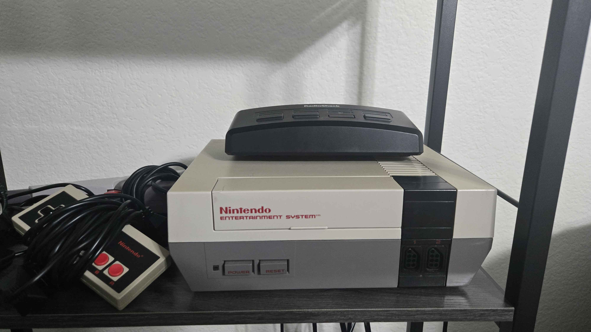
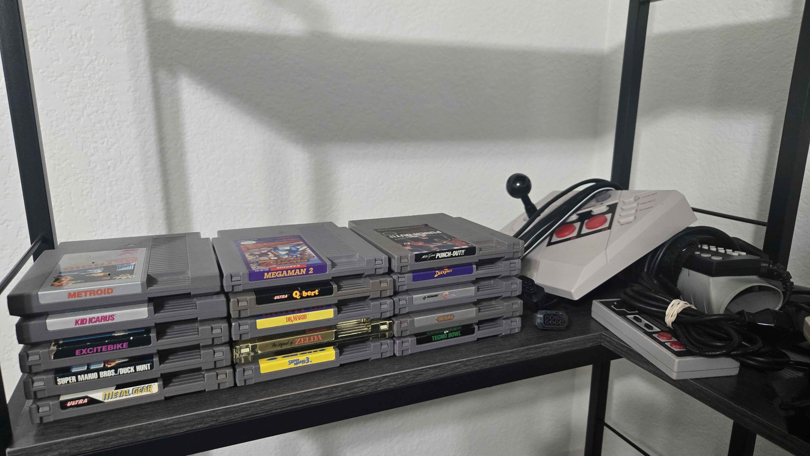
Nintendo Entertainment System
Nintendo | 1985
This is my Nintendo Entertainment System. I have the original 1985 model, which is the most recognizable one, as well as two of it's original controllers. I also have the original grey Zapper accessory, before it was changed to be orange in 1989 to appear less like a real gun, the Power Glove, famously featured in the 1989 film 'The Wizard', and the Advantage, an arcade style joystick that featured several bells and whistles and was marketed as a "professional player's tool", and a way to more closely emulate an arcade experience from home. Highlights of my game collection include the combination Super Mario Bros./Duck Hunt cartridge the console was originally bundled with on release, the original golden cartridge release of The Legend of Zelda, and Mike Tyson's Punch-Out!!.
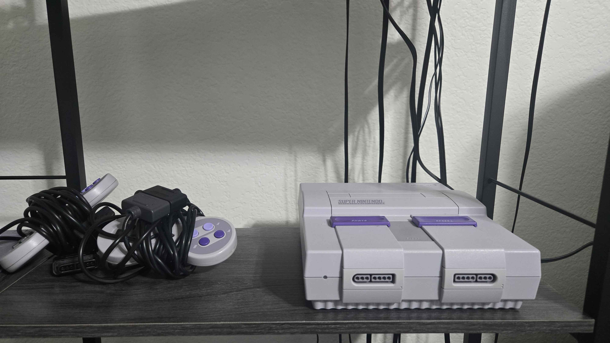
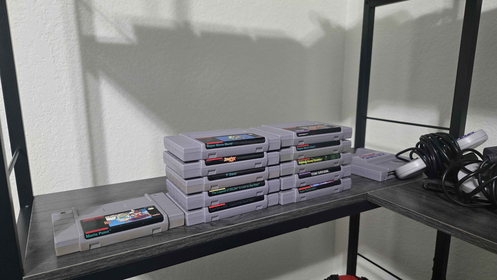
Super Nintendo Entertainment System
Nintendo | 1991
This is my Super Nintendo Entertainment System, accompanied by two original controller and a Super Game Boy cartridge, a fully functional Game Boy motherboard compressed into a cartridge to allow Game Boy games to be played on the TV in color, with some titles even supporting full color as opposed to the four colors most Game Boy games support. I also have the original Star Fox, which contained a secondary CPU inside the cartridge called the 'Super FX' chip, which allowed the SNES to draw the game environment in 3D polygons 5 years before the release of the Nintendo 64, though it could only be displayed in pixels, and only ran at 15 frames per second. Other highlights include Super Mario World, Donkey Kong Country, and The Legend of Zelda: A Link to the Past.
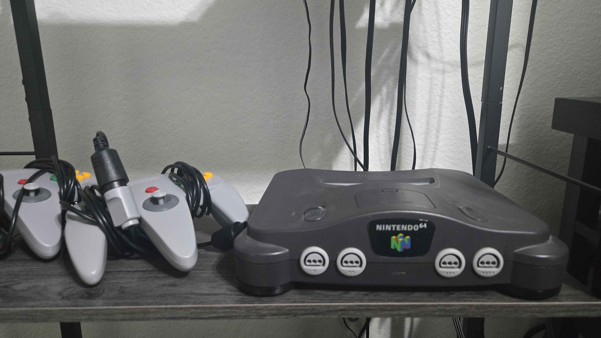
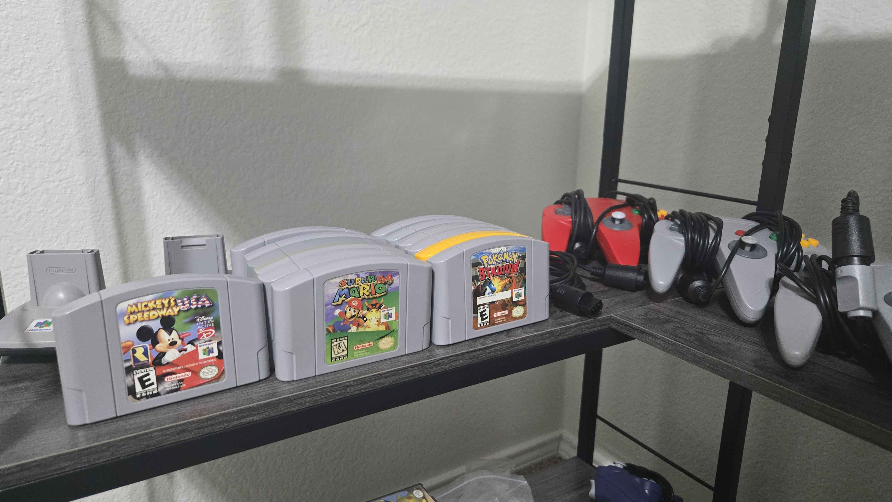
Nintendo 64
Nintendo | 1996
This is my Nintendo 64, equipped with the Expansion Pak, a RAM expansion for the console which doubles its capacity from 4MB to 8MB. A small fun fact is that despite the console not coming with the Expansion Pak, it is unable to turn on without something inserted into the expansion slot. The console comes with a small accessory called a Jumper Pak which contains a few resistors pretending to be a stick of RAM in order to complete the DRAM circuit and prevent the memory controller signals from bouncing back and looping infinitely, preventing the console from booting. I also own one original red controller, and two reproduction grey controllers, as well as a Rumble Pak, a small module enabling controller vibration, and two Transfer Paks, an accessory with a Game Boy cartridge slot on it for reading and transferring data from Game Boy games to a grand total of six North American N64 games, unlocking special new content and features in the afformentioned games. Some highlights of my library include Banjo-Kazooie, Super Mario 64, Donkey Kong 64, Golden Eye 007, Pokemon Stadium, Mario Tennis, and Mickey's Speedway USA, the latter 3 being half of the games compatible with the Transfer Pak accessory.
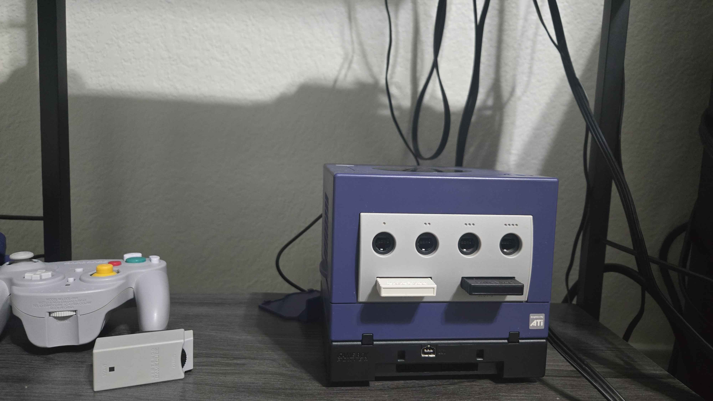
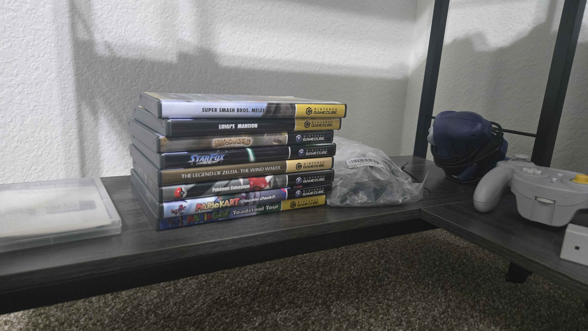
GameCube
Nintendo | 2001
This is my GameCube, the most expensive combined collection of my various consoles and games due to it's poor initial sales and resulting aftermarket rarity, the hardware in the two photos above total to over $1,000. Attatched to the bottom of the GameCube is the Gameboy Player, a rare accessory which functions similarly to the Super Nintendo's Super Game Boy, equipping the GameCube with a Gameboy Advance cartridge slot for playing on the big screen, as well as transferring data and unlocking extras in certain games similarly to the N64's Transfer Pak accessory. Additionally, I have one original controller, and a Wavebird wireless controller, which was the first major first-party controller to use RF to recieve inputs as opposed to IR, and to my knowledge, Nintendo's only RF controller, as it's successor, the Wiimote, used Bluetooth technology to connect to the console. Highlights of my game collection include Luigi's Mansion, Super Smash Bros. Melee, The Legend of Zelda: The Wind Waker, and Pokemon Colosseum, which takes the prize of the single most expensive Gamecube item I own, exceeding even the console itself in price, though the Gameboy Player and it's startup disk combined are valued higher than Pokemon Colosseum.
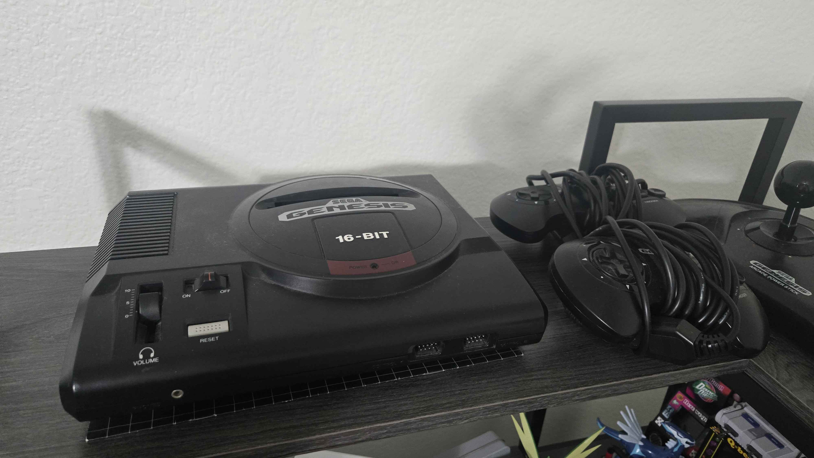
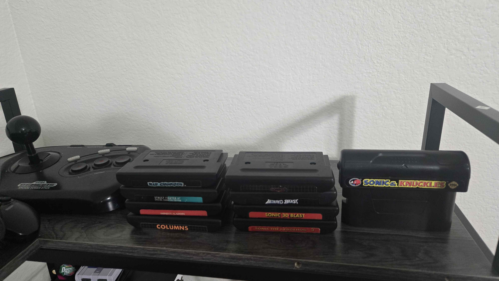
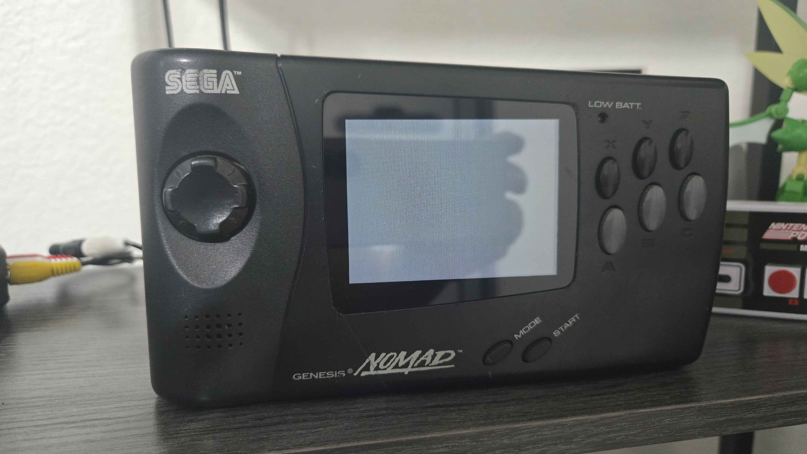
Sega Genesis // Genesis Nomad
Sega | 1989 // 1995
This is my Sega Genesis, I have the original 1989 model featuring the round cartridge bay and headphone output volume slider, as well as the original owners manual which rests under the console. It is accompanies by two original 3-button controllers, as well as an Arcade Power Stick, Sega's answer to the NES Advantage. The Genesis is often thought of as the SNES's direct competitor, but it was actually released in response to the original NES, beating the release of the SNES by 2 years. Also pictured is the Genesis Nomad, a fully functional Sega Genesis compressed down into a handheld form factor that plays the original cartridges, has a controller port for 2 player compatibility, and an A/V Out port to connect to a TV, eat your heart out Nintendo Switch. The Nomad suffered on release due to waning interest in the Sega Genesis, the non-inclusion of a battery pack, requiring the handheld to be plugged into power, and the poor screen quality, boasting a weak backlight and blurry image on fast moving games. My Nomad is equipped with the battery pack that was sold seperately, and has been upgraded with a custom-fit IPS screen that solves the problems of the original system and makes for a very cool display piece. Highlights of my game collection include Altered Beast, Sonic the Hedgehog 2, Sonic the Hedgehog 3, and Sonic & Knuckles, a unique cartridge that features an additional cartridge slot on top, connecting Sonic the Hedgehog 3 to Sonic & Knuckles combines the two games into one seamlessly and allows the full experience of the game to be played on the limitations of the hardware at the time. Connecting Sonic the Hedgehog 2 to Sonic & Knuckles allows you to play though all of Sonic the Hedgehog 2 as Knuckles the Echidna, including moves from Sonic 3 & Knuckles that did not exist in Sonic the Hedgehog 2, such as the spin dash. Connecting any other game to Sonic & Knuckles, including the first Sonic the Hedgehog, simply loads into Sonic & Knuckles' bonus red ball levels.
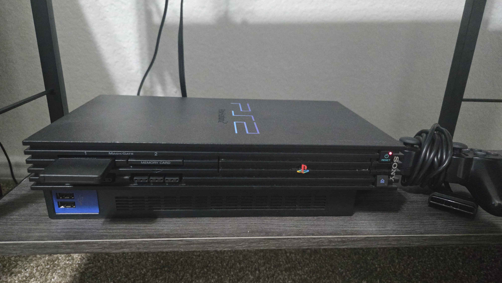
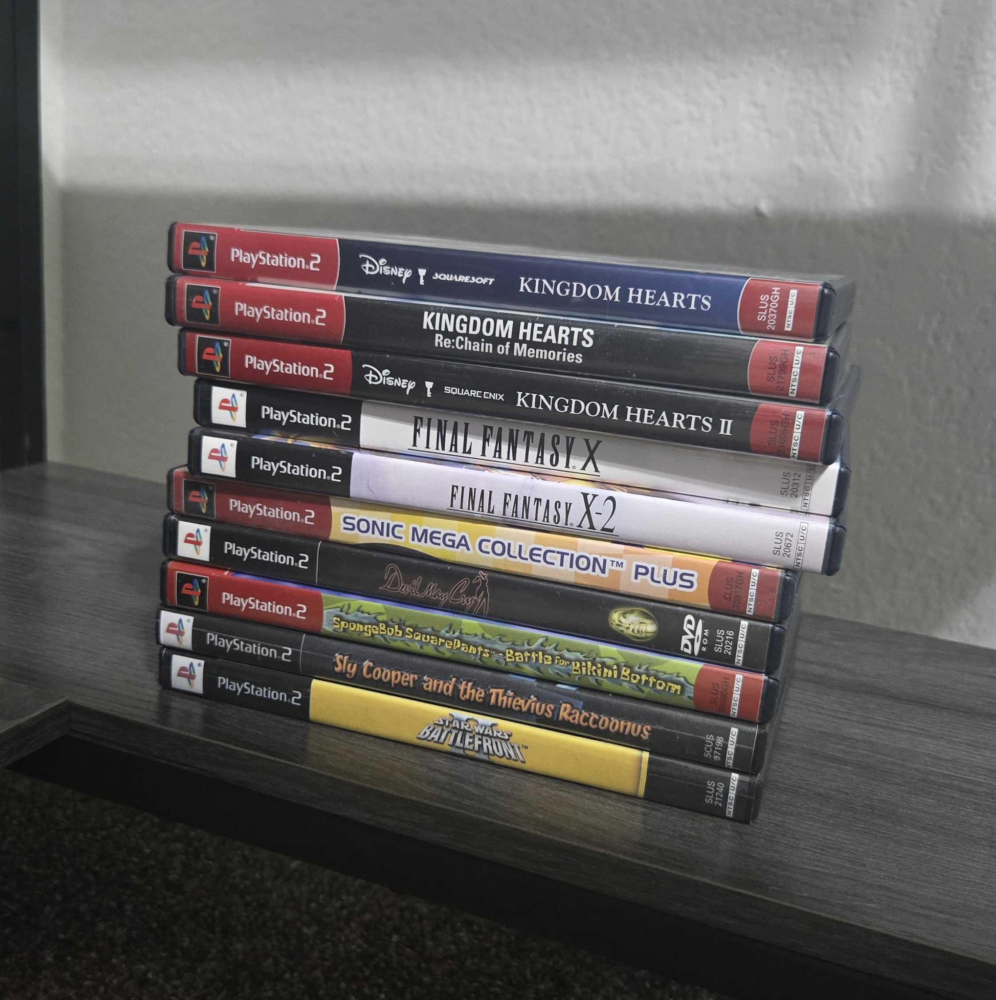
Playstation 2
Sony | 2000
This is the newest addition to my collection, a Playstation 2, the original 2000 model. It needs no introduction as the best-selling video game console, home or handheld, of all time, eat your heart out Nintendo Switch. A fun fact about the Playstation 2 is that Sony released a disc containing a Linux-based operating system bundled alongside a USB keyboard, mouse, VGA adapter, ethernet adapter, and 40GB HDD in order to convert the Playstation 2 into a functioning Linux desktop computer. Why? Who knows. Highlights of my collection include, Kingdom Hearts, Kingdom Hearts II, Sly Cooper and the Thevius Raccoonus, Final Fantasy X, and Kingdom Hearts Re:Chain of Memories, a game that was released in 2008, 2 years after the release of the Playstation 3. Why? Who knows.